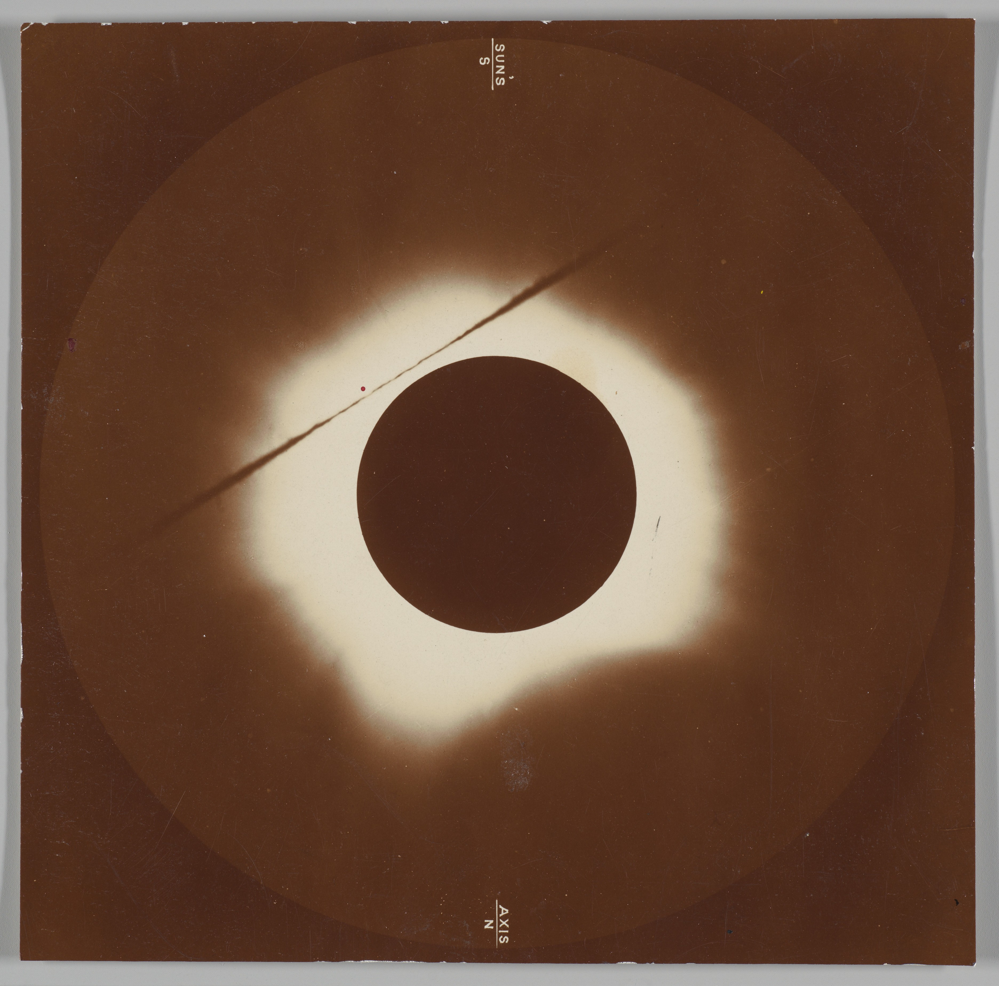

modern
alchemist
Specimen: Alch-129
Age: 42.0 yr
H: 1.68 m
M: 63.2 kg
HR: 078 bpm ☿ RR: 016 / min
Humors: 4 (choleric ↑)
Elix.: 0.3 flasks / hr
Met.: Lead → Gold
ATP: 5.8×10²⁰ mol/s
v: 0.9 m/s →
Eff.: 19 % (divine
variance ±)
When most people hear the word alchemy they imagine shadowed figures in ancient laboratories, stirring metals over fire in the hope of turning lead into gold, and history often dismisses them as misguided dreamers or failed scientists. Yet this popular image hides the deeper truth that alchemy was always a language of transformation, a way of describing the hidden processes by which one substance becomes another. In that sense, every human body is itself an alchemical vessel: lungs quietly distill oxygen from the air and fuse it with blood, the stomach dissolves grains and fruits into energy-rich compounds, muscles convert those compounds into motion, and within the brain, electrical signals give rise to thought, memory, and imagination. What seems ordinary—eating, breathing, moving—is in fact a constant sequence of transmutations, where matter is endlessly reworked into life. While we have been misinformed into believing alchemy was only superstition, the truth is that the alchemy of the human body is real, grounded in biology and chemistry, yet no less wondrous than the myths. We are living crucibles, philosophers’ stones made flesh, transforming the common into the miraculous with every heartbeat and every breath.
Specimen: CELL
Age: 0 hr
D: 20 µm
M: 1.1 ng
HR: 000 bpm
RR: 000 / min
ATP: 1.0×10⁷ mol/s
VO₂: 2.1×10⁻¹⁶ L / s
CO₂: 1.8×10⁻¹⁶ L / s
DNA: 6.4×10⁹ bp
Rib.: 10⁶ units
v: 0.02 µm/s →
Eff.: 38 %
Specimen: MYOCYTE
(Muscle Cell)
Age: 12 yr
L: 80 µm
M: 6.5 ng
HR: sync
RR: sync
ATP: 1.6×10⁹ mol/s
VO₂: 3.2×10⁻¹⁶ L / s
CO₂: 2.9×10⁻¹⁶ L / s
DNA: 6.4×10⁹ bp
v: 4.5 µm/s →
Eff.: 38 %
Specimen: NEURON
Age: 4 yr
L: 1.2 m
M: 4.3 ng
HR: 000 bpm
RR: 000 / min
ATP: 4.7×10⁸ mol/s
VO₂: 9.5×10⁻¹⁷ L / s
CO₂: 8.9×10⁻¹⁷ L / s
DNA: 6.4×10⁹ bp
Ax.: 1.3 m/s → 120 m/s
Eff.: 42 %
GENESIS
For most us, the word alchemy conjures up images of sorcerers in dim-lit chambers, bent over a bubbling cauldron, whispering incantations as they try to conjure gold from lead. We’ve learned the word alchemy to be synonymous with fantasy, a symbol of obsession and a dead science at best. But this is a myth. Alchemists were not dreamers and charlatans; they did not only blur the line between mortal and magic maker; but were indeed our very own early scientists. Alchemists were practical peoples; procuring remedies in their dusty apothecaries; refining metals and creating alloys like brass; distilling compounds making medicines to treat and heal. All this in the guise of transformation; paving the path for one object to become other; evolving function and creating anew.
This focus on transformation is integral to the understanding of this narrative. Here, we reframe the idea of what it means to be a transformer.
Philosophers have long distinguished between poiesis, the creation of things through production, and praxis, the transformation of the human agent through action. Both are necessary in alchemy. When a blacksmith hammers ore into a blade, they exercise poiesis. When that same blacksmith strengthens their own muscles and hones their skill with every strike, they enact praxis.
Through praxis, the subject is his own raw material. As humans, we never find ourselves dealing with either practice or theory alone. Our bodies are not simply tools, though we are inventors and makers. Neither exists without the other: in making, we are also remade. The alchemist knew this intuitively. So should we.
This idea of transformation is at the core of alchemy, and also at the core of what it means to be human. When we speak of alchemy as fantasy, we neglect to understand that transformation is not mythical at all: it is biological, cultural, and constant.
Our awareness of these small miracles shape us.
This idea of transformation is at the core of alchemy, and also at the core of what it means to be human. When we speak of alchemy as fantasy, we neglect to understand that transformation is not mythical at all: it is biological, cultural, and constant.
There are millions of cells inside of you, moving you, building you, and working to survive you.
In all of our bodies, we are at work transmuting food into energy, folding elements like zinc, iron and copper into blood and bone. We inhale oxygen, and through our lungs and bloodstream, it is converted into fuel for muscle and thought. To walk, to breathe, to grow; these are all processes of transmutation.
To see humans as alchemists is to see ourselves as beings of constant becoming.
We are not static creatures but raw materials in motion; cells regenerating, bones repairing, minds learning, societies reshaping. Alchemy has never been about the philosopher’s stone, or the pursuit of gold. It has always been about transformation; transformation as the essence of existence. In that sense, alchemy has never been myth. It exists now in the iron of our blood and the architecture of our cities. To dismiss alchemy is to forget that every human act of change - whether in body, mind, or matter - is an alchemical act. We are, each of us, living laboratories of transformation.